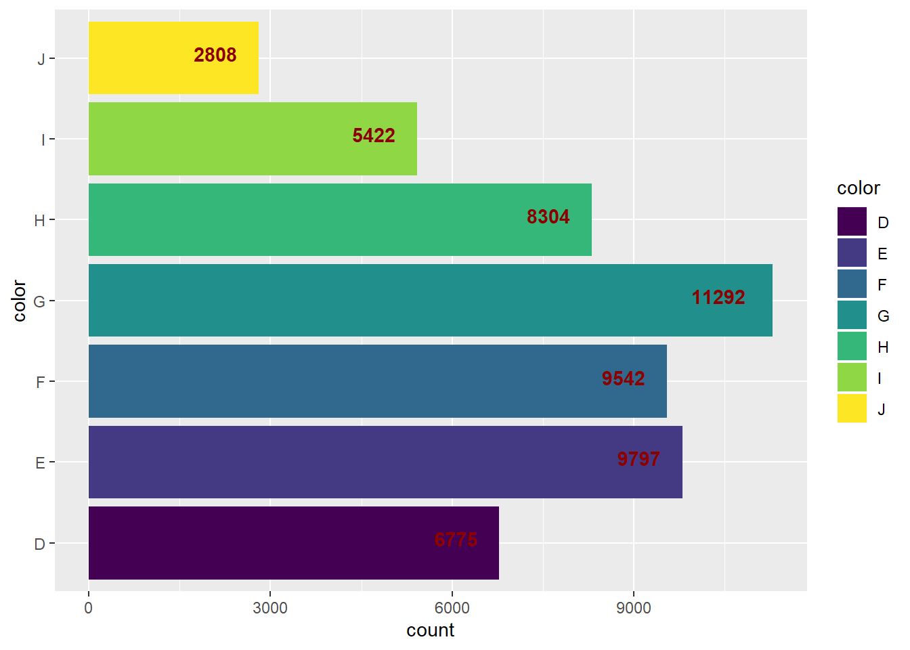
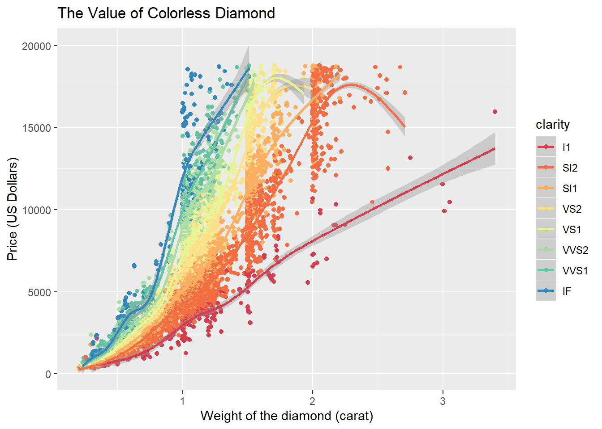
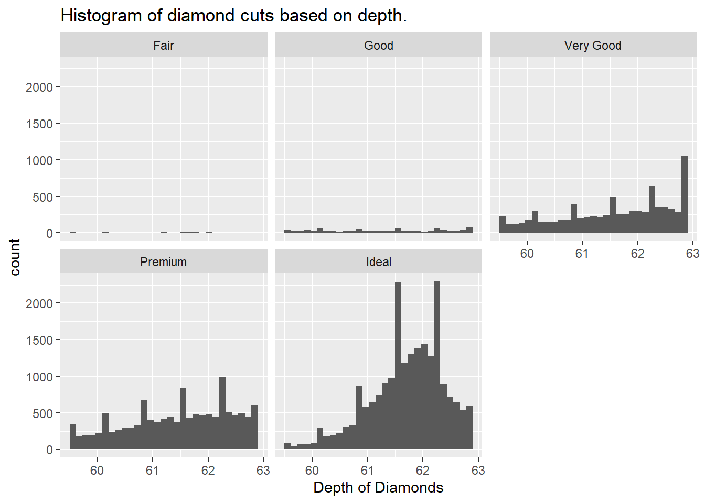

library(MASS)
library(dplyr)
library(tidyr)
library(ggplot2)
library(knitr)
opts_chunk$set(tidy.opts=list(width.cutoff=60),tidy=TRUE)diamonds dataset from the ggplot2 package. Use the functions inside dplyr and ggplot2 packages to answer the following questions.# Change the object of diamonds dataset from tibble to data frame.
diamonds <- as.data.frame(diamonds)diamonds dataset, grouped by color grading.diamonds%>%
ggplot(aes(color))+
geom_bar(aes(group = color, fill = color))+
coord_flip()+
geom_text(stat='count', aes(label=..count..), vjust=0.2, hjust = 1.5,
colour = "darkred", fontface = "bold")
diamonds dataset and assign it to colorless_diamonds for later use.colorless_diamonds <- diamonds%>%
filter(color %in% c("D","E","F"))colorless_diamonds data frame to recreate the uploaded “The Value of Colorless Diamond” plot. colorless_diamonds%>%
ggplot(aes(carat,price, color = clarity))+
geom_jitter()+
geom_smooth()+
scale_color_brewer(palette = "Spectral")+
labs(x="Weight of the diamond (carat)", y = "Price (US Dollars)",
title = "The Value of Colorless Diamond")## `geom_smooth()` using method = 'gam' and formula 'y ~ s(x, bs = "cs")'
diamonds dataset and assign it to ideal_depth_diamonds for later use.ideal_dept_diamonds <- diamonds%>%
filter(diamonds$depth >= 59.5 & diamonds$depth <= 62.9)ideal_depth_diamonds data frame to draw the histogram of the depth for each quality of the cut separately in one graphic window.ideal_dept_diamonds%>%
ggplot(aes(depth))+
geom_histogram(bins = 30)+
labs(x = "Depth of Diamonds",
title = "Histogram of diamond cuts based on depth.")+
facet_wrap(~ cut)
x) of the diamond by its width (y). Add a new variable named LWratio to the diamonds dataset and assign it to LW_diamonds.LW_diamonds <- diamonds%>%
mutate(LWratio = x/y)